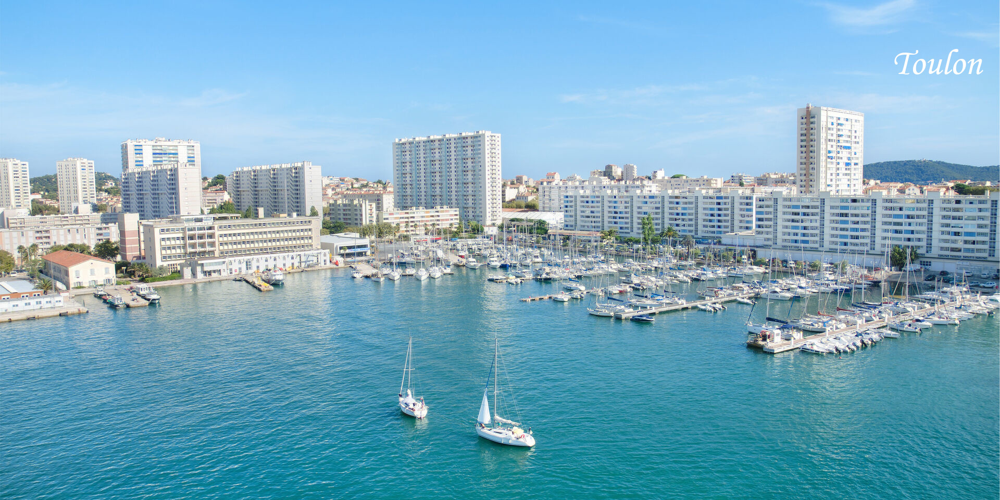

Présentation de la formation Tremplin Numérique

Qui sommes-nous ?
"Les Petits Débrouillards" est considéré comme un mouvement et / ou une association
ayant pour but le developpement de l'esprit critique, la remise en question
de certaines de nos certitudes ainsi que d'une aide pour
l'intégration à la vie active.
Présents dans de multiples pays et continents,
Que faisons-nous ?
Dans cette formation, nous pouvons dire que nous sommes un peu "touche-à-tout" :
Au fur et à mesure des séances, différentes branches de l'informatique sont
explorées, afin que chacun puisse savoir ce qu'il préfère et,
éventuellement, débuter des projets de plus en plus sérieux
dans leur(s) domaine(s) favori(s).
Notre équipe :
Les participants de cette formation "Parcours Tremplin Numérique"
se situent dans la région PACA, dans le sud de la France.